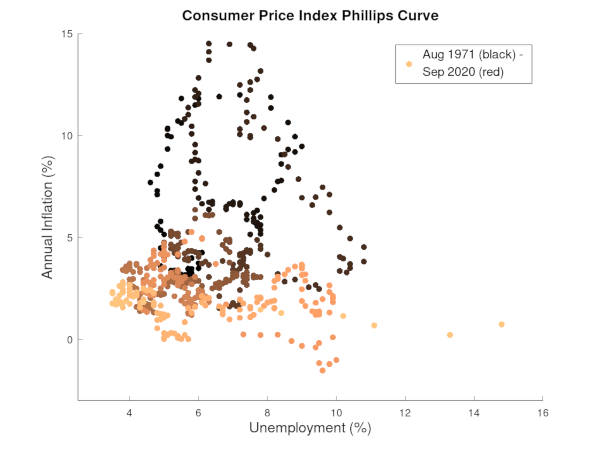
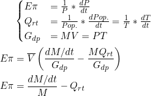
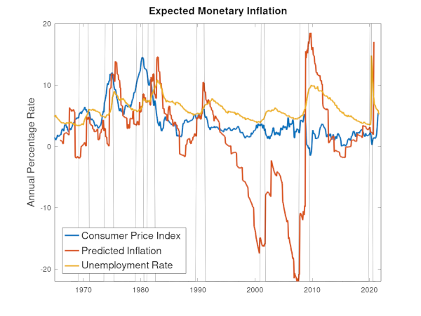
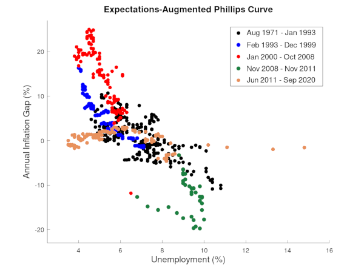
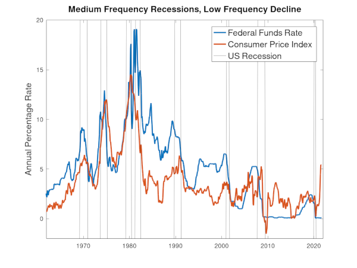

Duel Mandate: The Irony and Inequity of the Federal Reserve System
Central Bankers in and out of Government have more responsibilies and things to worry about in recent years:
- Historic Discrection of the Dual Mandate
- Apparent Collapse of the Phillips Curve
- Inflation Inertia
- Nominal Interest Rates and the Zero Lower Bound
- Liquidity Trap
- Real Interest Rates and Secular Stagnation
- the long-term decline in real interest rates
- a general rise in inequality over recent decades
This article is a monetarist critique of the discretion power and discretionary policies of the Federal Reserve. It is also a surprisingly positive prediction of future trends, especially with regard to a slowing down of the growth of wealth inequality.
1. Historic Discretion of the Dual Mandate
The Constitution says the Congress shall have power:
- To borrow money on the credit of the United States;
- To coin money, regulate the value thereof, and of foreign coin, and fix the standard of weights and measures;
- No money shall be drawn from the Treasury, but in consequence of appropriations made by law; and a regular statement and account of the receipts and expenditures of all public money shall be published from time to time.
- No state shall enter into any treaty, alliance, or confederation; grantletters of marque and reprisal; coin money; emit bills of credit; make anything but gold and silver coin a tender in payment of debts; pass any bill of attainder, ex post facto law, or law impairing the obligation of contracts, or grant any Title of Nobility.
The gold standard was broken by executive order by FDR in 1933 and ended by Nixon in 1971 (a bipartisan affair). At each instance, Congress and the Surpreme Court conceded to the executive these changes. One can argue this breaking-change leadership was necessary given the circumstances or that it was an inevitable result of advances in economics, as Keynesians or Monetarist might, but the spirit of the constitution where monetary policy was subject to more constraints that the whims of bureaucrats was never properly ammended.
The current mandate of the Federal Reserve from Congress directs:
The Board of Governors of the Federal Reserve System and the Federal Open Market Committee shall maintain long run growth of the monetary and credit aggregates commensurate with the economy's long run potential to increase production, so as to promote effectively the goals of maximum employment, stable prices, and moderate long-term interest rates.
Ironically, this tripartite instruction has come to be known as the dual mandate, i.e. stable prices and maximum sustainable employment.
This faux pas is likely due to the prominance of the Phillips Curve and IS-LM model in macro economics and their predictions of tradeoffs between inflation and GDP (Phillips Curve) and GDP and interest (LM Curve). Interest rates are seen as a policy variable to adjust these relationships, but virtually ignored is any correlation between interest rates and inequality.
2. Collapse of the Phillips Curve
The Phillips Curve is the observed inverse correlation between unemployment and inflation, an academic observation on which the Federal Reserve's mandate is partially based. However its primacy as a policy tool has been reduced since the 1970s due to the observed correlation becoming unstable and due to a critique by Friedman and Phelps that predicted the instability due to changes in inflation expectations by the people.
The instability is clear in a simple CPI based Phillips Curve; in the darker points from the 1970s-1990s it looks much more like a random cloud than a curve.
In addition to instability, in the 2000s the Phillips Curve appeared to flatten as inflation stayed low, causing significant concern amoung Keynesian economists and public servents. The concern is two-fold, can a flat Phillips Curve still be used for adjusting the unemployment rate in recessions and have any other misunderstandings, besides the lack of expectations critiqued by Friedman, caused the Federal Reserve to conduct counterproductive or harmful policy?
There is lots of recent research in this area, for example the expectation augmented phillips curve equation below is from a comprehensible presentation on the New Keynesian Phillips curve, where π is actual inflation rate, Eπ the expected inflation, and -κu basically the old Keynesian Phillips curve (a slope × unemployment rate).

In a lot of this research, graphs like the one below are very popular, the idea being that inflation is self-fulfilling, that if the Federal Reserve can convince us of its competance at keeping inflation at a certain rate, that in and of itself will help make it true.

The self-fulfilling "anchoring" of inflation expectations shares a common theme with most Keynesian theories, that the people, left to their own market interactions, can produce a positive feedback look that must be actively managed by a competent authority, in this case for inflation. For example, consider Chairman Bernanke's speech on anchoring low inflation expectations in 2007:
...Likewise, a lower sensitivity of long-run inflation to supply shocks would imply that such shocks are much less likely to generate economic instability today than they would have been several decades ago. Notably, the sharp increases in energy prices over the past few years have not led either to persistent inflation or to a recession, in contrast (for example) to the U.S. experience of the 1970s.
3. Inflation Inertia
Many have been surprised by the apparent success of "anchored" low inflation expectations, with inflation even persisiting below the Federal Reserves's target rate of 2%. However this "anchor" is actually forecastable with a simple monetary-based rule.
In Why Do We Think that Inflation Expectations Matter for Inflation?, Mr. Rudd finds that, if as is frequently done in recent academic work, if "the 'true' inflation equation has a role for short-run expected inflation" and assuming a particular inflation forcasting rule, then: "the expectation of long-run inflation in this sort of world will likely be self-fullfilling: with a zero unemployment gap and no supply shocks, actual average inflation will equal the long-run mean obtained from the inflation forcasting rule."
Take the tautology money supply (M) times velocity (V) equals the average price level of goods and serives (P) times the number of transactions in the economy (T), where velocity is defined in terms of the other variables but intuitively is sort of like the size of peoples' rainy day funds. Assuming velocity remains constant and taking a partial derivative results in an equation for expected change in average price levels.

This is not very useful, but substituting in variables for which there is publically available data, namely expected inflation (Eπ), population growth rate (Qrt), and gross domestic product (Gdp) produces a useful relationship between predicted inflation, changes in the money supply, and population growth.
 

Comparing the simple Unemployment/CPI Phillips Curve from above vs. using this forecasted inflation gap produces a much sharper, more stable correlation between inflation and unemployment during periods of economic shocks (oil crises, recessions, NAFTA, etc.) and a dramatic flattening in 2012 and beyond.

1. Nominal Interest Rates and the Zero Lower Bound
Keynesian economics is supposed to be countercyclical; the point of having a bureaucrat in charge is to dampen economic cylces, making recessions less severe and expansions less booming/speculative. In this view, interest rates are one of the central banker's levers to strengthen or moderate the economy and therefore correct unemployment and inflation.
Unfortunately, this aspect of Keynesian economics is scientifically true, in the sense that it has never been tested. The graph below shows that over all six of the last six cycles, and especially the last four, the Federal Reserve has never succeeded in returning interest rates to their previous level.
Since the Great Recession central bankers have fretted about nominal interest rates approaching the "zero lower bound" (ZLB) because this constricted their ability to lower interest rates further during Covid 19 and future crises. However, it is hard to take a school of thought seriously which frets so much about a "problem" of its own making.
2. Liquidity Trap
Yet the come-tragedy continues, instead of being content with lowering nominal interest rates to zero and testing the Keynesian hypothesis over the entire cycle, central banks around the world have begun another experiment, large scale asset purchase programs (LSAP or QE) to temporarily lower real interest rates further. Unironically they fret over a liquidity trap, where the central bank can no longer influence GDP by increasing the money supply because the investments available have no higher nominal yields than simply holding the cash.